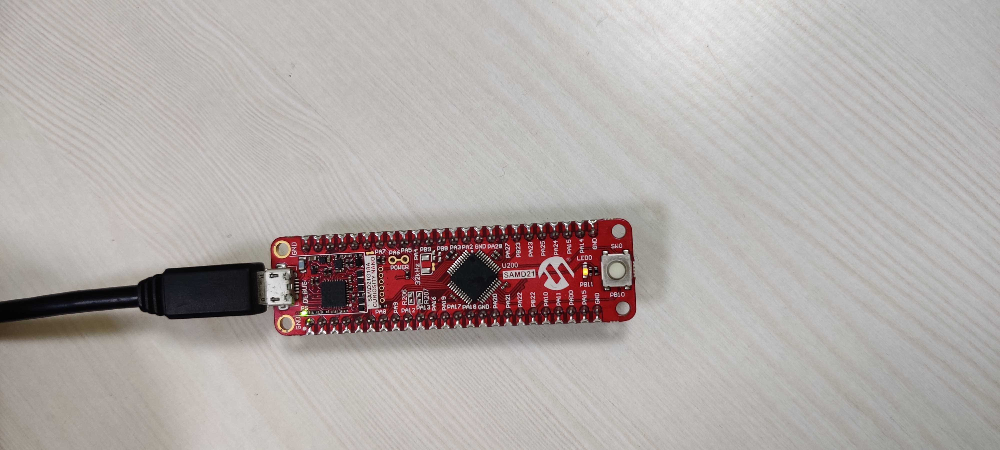

This application demonstrates an LED (LED0) toggle on timeout basis and print the LED toggling rate on the serial terminal. The periodicity of the timeout will change from 500 milliseconds to one second, two seconds, four seconds and back to 500 milliseconds every time you press the switch SW0 on the SAM D21G17D Curiosity Nano Development Board.
This project has been verified to work with the following versions of software tools:
